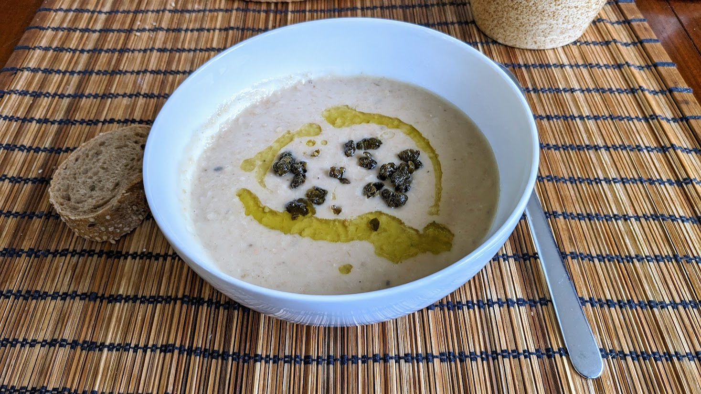

..@..♦.D.

|
Présentation 
|
Blog
|
Recettes
|

Ici avec une soupe de haricots blancs
Pour garnir pour 3 ou 4 bols de soupe:
Remarque : l'huile aromatisée aux câpres frites peut aussi être utilisée pour garnir une soupe ou un autre plat. On peut aussi faire infuser de l'ail émincé dedans pour ajouter du goût.